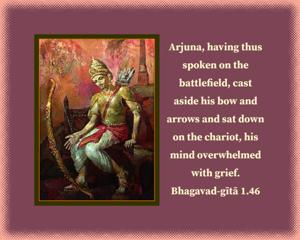
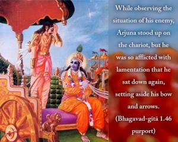

Sañjaya said: Arjuna, having thus spoken on the battlefield, cast aside his bow and arrows and sat down on the chariot, his mind overwhelmed with grief.


While observing the situation of his enemy, Arjuna stood up on the chariot, but he was so afflicted with lamentation that he sat down again, setting aside his bow and arrows. Such a kind and soft-hearted person, in the devotional service of the Lord, is fit to receive self-knowledge.